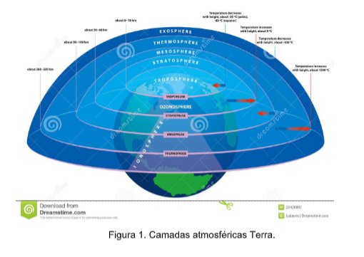
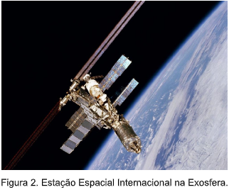
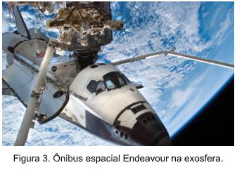
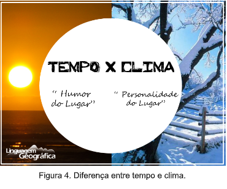
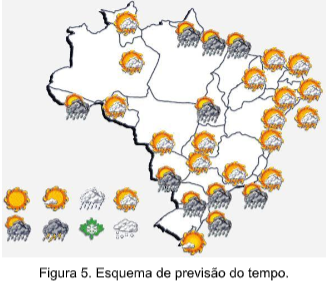
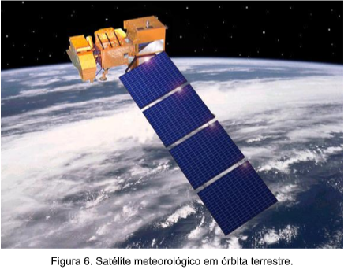
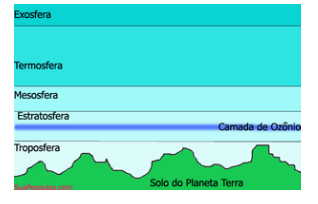

Capítulo 4
Fenômenos Naturais e a Indústria da Construção Civil
A atmosfera é toda a camada gasosa que envolve os planetas. A Terra possui uma atmosfera dividida em diversas camadas que diferenciam-se pela altitude, pressão e temperatura.
Troposfera: é a camada mais próxima do solo, cerca de 12 km de altura. A camada onde existe vida. É nela que ocorrem os fenômenos meteorológicos: chuvas, furacões, tempestades, etc. A temperatura na troposfera diminui 6 graus Celsius a cada 1000 metros. 17 A média a nível do mar é 15ºC. Os aviões comerciais voam na altura de 10.000 metros (10 Km) e a temperatura lá é de -56ºC.
Estratosfera: Estende-se desde o final da troposfera até 50Km de altura. Lá existe o gás ozônio, capaz de filtrar os raios ultravioleta do sol. Mesosfera: Compreendida entre 50 km até 85 km de altura. Ocorre um rápido aumento de temperatura de 80º C até uma queda brusca de -90º C. Existem aviões militares capazes de voar nessa altitude. Termosfera: Vai de 85 km até 500 km de altura e a temperatura vai aumentando até chegar perto de 2000ºC. É a camada onde existem satélites meteorológicos e de comunicação (TV, rádio).
Exosfera: A camada superior que vai de 500 km até 1000 km de altura. Nela há pouco ar e depois dela existe o vácuo, ou seja o vazio, não há mais partículas.
Você Sabia?
Qual a diferença entre fenômenos naturais x artificiais
A diferença entre fenômenos naturais e artificiais são bem simples e fáceis de entender. Fenômenos naturais são aqueles que ocorrem pela ação da natureza, sem que o ser humano interfira. Exemplos de fenômenos naturais: Vulcanismo, relâmpagos, chuvas, neve. A princípio, é bom reforçar que todo fenômeno é um evento que pode ser observado, descrito e explicado. Em suma, um fenômeno artificial é todo aquele feito por ação do homem. Para exemplificar, a luz elétrica, os carros, prédios, entre outros. Entretanto, há casos que ambos os fenômenos se misturam.
Qual a diferença entre tempo e clima?
PARA IR ALÉM:
❖ Meteorologia – é uma das ciências que estuda a atmosfera terrestre e que tem como foco o estudo dos processos atmosféricos e a previsão do tempo.
❖ Tempo – compreende as condições atmosféricas de determinado local em certo momento.
❖ Clima – compreende as condições atmosféricas que ocorrem com mais frequência em determinada região durante um longo período.
❖ Climatologia – Ciência que descreve, explica e classifica os climas, investigando os seus fenômenos e influências
Previsão do tempo
Feita por um profissional denominado meteorologista, que utiliza vários instrumentos, desde simples até satélites sofisticados.
Os fenômenos atmosféricos são analisados em órbita da Terra. As imagens são enviadas instantaneamente para laboratórios computadorizados que analisam e informam pelo rádio, TV e internet sobre as condições do tempo.
Fenômenos naturais e construção civil
Pesquisas indicam que os ciclones sobre o Atlântico serão cada vez mais frequentes, além disso, grandes inundações também se tornaram comuns no Brasil. De acordo com um estudo feito pelo norte-americano James Biles, da Universidade de Indiana, e pelo argentino Daniel Cobos, da Universidade Nacional de Cuyo, a América Latina é uma das áreas mais expostas a desastres naturais. Nos últimos 10 anos, eles resultaram na morte de 45 mil pessoas e causaram prejuízos de US$ 20 bilhões. Em resposta aos fenômenos climáticos que têm acontecido, tais como ciclones, avalanches, terremotos e enchentes, engenheiros e arquitetos se perguntam: Como construir para resistir a estes efeitos? Quais os cuidados que devem ser adotados desde a concepção do projeto até a escolha do sistema construtivo? – Jamais construa em áreas de risco tais como: margens de rios, áreas sujeitas a inundações e deslizamentos, sob encostas de morros, etc. – Ao construir, consulte o código de obras do município. Um bom código de município aborda as áreas que representam riscos de construção e não irá liberar alvará para que se construa nestas áreas, minimizando assim o risco de morte causado por deslizamentos, por exemplo. – A edificação deve estar de acordo com as normas técnicas construtivas. – Casas com estruturas de concreto armado são melhores que de madeira, pois resistem mais e melhor à queda de árvores ou impactos de objetos com pesos significativos. – Existem projetos com design de que devido ao formato resistem melhor a fortes vendavais, por isso deve-se consultar um arquiteto antes de construir nestas áreas. – Em áreas sujeitas a inundações, as casas devem ser projetadas mais altas (montadas sobre pilares) e as fundações por sua vez devem ser melhoradas. – A estrutura da edificação deve ser constantemente inspecionada a fim de investigar pontos frágeis (corrosões, cupim ou podridão no madeiramento). – Prever a correta manutenção da residência, o que inclui uma simples pintura da edificação que impermeabiliza melhor a parede prolongando a vida útil da edificação. Aprimorar a qualidade das construções pode ser uma boa maneira de se evitar novas tragédias, contudo, sabe-se que as características das moradias que resistem a estes efeitos climáticos não apenas contemplam alguns cuidados ou o uso de novas tecnologias, mas também o acréscimo de elementos que antes não se via como quartos especialmente desenvolvidos para armazenar fontes de energia, alimentos, kits de primeiro socorros e água. Embora isso torne a construção mais cara, estas melhorias continuam sendo desenvolvidas e aplicadas devido ao clamor dos próprios compradores. Atualmente existe inclusive uma recomendação da Organização das Nações Unidas (ONU), para que os países desenvolvam moradias que suportem fenômenos meteorológicos severos. E não obstante, o quarto informe do grupo intergovernamental de especialistas sobre a mudança climática, vinculado à ONU, alertou para o aumento de ciclones e furacões devido à elevação da temperatura no planeta, bem como para o fato de que o nível do mar poderá subir até um metro antes do final deste século. De qualquer maneira, mesmo alterando as normas construtivas, edificações mais antigas continuarão existindo, pressupondo todos os riscos a elas envolvidos.
Fonte: https://www.cimentoitambe.com.br/massa-cinzenta/fenomenos-climaticos-exigem-cuidados-na-construcao/1) Observe a figura abaixo e RELACIONE as colunas:
( a ) troposfera ( ) limite com o espaço cósmico
( b ) estratosfera ( ) temperaturas muito elevadas
( c ) mesosfera ( ) camada rica em ozônio
( d ) termosfera ( ) temperaturas muito baixas
( e ) exosfera ( ) ocorrem fenômenos meteorológicos
2) Diferencie tempo e clima
3) Cite algumas medidas que devem ser tomadas na construção civil para suportar os efeitos do clima.
1) e, d, b, c, a
2) Tempo é o humor de um lugar e clima é a personalidade.
3) Jamais construa em áreas de risco tais como: margens de rios, áreas sujeitas a inundações e deslizamentos, sob encostas de morros, etc. Casas com estruturas de concreto armado são melhores que de madeira, pois resistem mais e melhor à queda de árvores ou impactos de objetos com pesos significativos. Existem projetos com design de que devido ao formato resistem melhor a fortes vendavais, por isso deve-se consultar um arquiteto antes de construir nestas áreas.